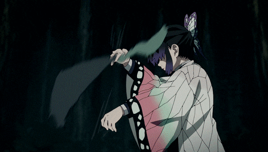

La Pilar del Insecto
Shinobu Kocho es un personaje secundario importante dentro de la franquicia de Kimetsu no Yaiba. Shinobu fue una Cazadora de Demonios que se desempeñaba como uno de los Pilares; ella ocupó el puesto como el Pilar del Insecto .
Shinobu Kocho, quien sin lugar a dudas es un “bicho raro”, incluso entre los cazadores de demonios, logró compensar su falta de fuerza física con un estilo de esgrima basado en la velocidad, con el cual ataca a sus enemigos y los envenena para asesinarlos.
Kanae
Primer pilar del insecto, hermana de shinobu y kanao
Shinobu
Hermana de kanae y kanao, Actual pilar del insecto
Kanao
Hermana de kanae y Shinobu, Aprendiz de shinobu
Poderes y Habilidades
Shinobu era una espadachín que pertenece a los pilares, los espadachines más fuertes del cuerpo de cazadores de demonio. Ella representa al pilar insecto. No obstante, Shinobu no posee la fortaleza física necesaria para cortar las cabezas de los Demonios lo que la lleva a desarrollar un estilo de lucha propio para adaptarse a su falta de fortaleza física.

La Personalidad de Shinobu
Shinobu era bastante relajada, siempre con una sonrisa en su rostro, independientemente de la situación. Parece disfrutar burlarse de los demás y puede ser bastante sádica al respecto en especial a su compañero Giyu Tomioka.Cuando está frente a un Demonio, Shinobu mostraba un lado inesperadamente cruel y sádico al asesinar a la hermana mayor de los Demonios araña después de darle falsas esperanzas de querer ayudarla no sin antes decirle lo que tenía pensado hacer con ella y luego, intentar asesinar a Nezuko.
.png)